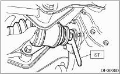
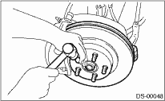

1. Insert the rear drive shaft into the rear axle.
2. Tighten the axle nut temporarily.
3. Using the ST, install the rear drive shaft to the rear differential while protecting the oil seal.
| ST 28099PA090 | OIL SEAL PROTECTOR |

4. Using new self-locking nuts, temporary tighten the front and rear lateral links to the housing.

5. Using new self-locking nuts, temporary attach the trailing link to the housing.

6. Install the stabilizer link.
Tightening torque:
45 N·m (4.6 kgf-m, 33 ft-lb)

7. Install the ABS wheel speed sensor.
Tightening torque:
32 N·m (3.3 kgf-m, 24 ft-lb)

|
(1) |
ABS wheel speed sensor |
8. Using ST1 and ST2, pull the rear drive shaft to the required location.
| ST1 922431000 | AXLE SHAFT INSTALLER |
| ST2 927390000 | ADAPTER |
9. While applying the parking brake pedal, tighten the new axle nut to the specified torque.
Tightening torque:
190 N·m (19.4 kgf-m, 140 ft-lb)
CAUTION:
Be sure to tighten axle nut to specified torque. Do not overtighten it as this may damage the wheel bearing.
10. After tightening the axle nut, lock it securely.

11. Attach the rear vehicle height sensor bracket to the rear cross member. (HID model, right side only)
Tightening torque:
7.5 N·m (0.8 kgf-m, 5.5 ft-lb)
12. Attach the rear vehicle height sensor bracket to the lateral link. (HID model, right side only)
Tightening torque:
7.5 N·m (0.8 kgf-m, 5.5 ft-lb)
13. Connect the connector to the rear vehicle height sensor. (HID model, right side only)
14. Install the wheel and tighten the wheel nuts to specified torque.
Tightening torque:
100 N·m (10.2 kgf-m, 73.8 ft-lb)
15. Make the tires completely touch the ground.
CAUTION:
Always tighten bushings with wheels in full contact with the ground and the vehicle at curb weight.
16. Tighten the rear housing assembly and lateral link assembly installation bolts.
Tightening torque:
140 N·m (14.3 kgf-m, 103 ft-lb)
17. Tighten the rear housing assembly and trailing link assembly installation bolts.
Tightening torque:
90 N·m (9.2 kgf-m, 66 ft-lb)
18. Connect the battery ground cable to the battery.
19. Inspect the wheel alignment and adjust if necessary.
20. Re-initialize the auto headlight beam leveler system. (Model with HID)